library(tidyverse) # Core data import, transformation, and plotting tools
library(scales) # Axis and legend label formatting
library(lubridate) # Helpers for working with dates4 Core ggplot2
4.1 Learning Goals
By the end of this chapter, the main goals are:
- build a plot from data plus mappings plus geoms
- understand the difference between mapped and fixed aesthetics
- improve a plot with labels, scales, and themes
- use direct labels and annotation when they clarify a figure
4.2 Load Packages
gap_raw <- read_csv("Data/gapminder/gapminder_unfiltered.csv")
economics_data <- read_csv("Data/ggplot2/economics.csv", show_col_types = FALSE)
midwest_data <- read_csv("Data/ggplot2/midwest.csv", show_col_types = FALSE)
gap_2007 <- gap_raw |>
filter(year == 2007)4.3 Comparing Base R To ggplot2
4.3.1 Base R Graphics
The quickest place to start is often base R. It works, but the defaults are usually less attractive and harder to refine.
plot(gap_2007$gdpPercap, gap_2007$lifeExp)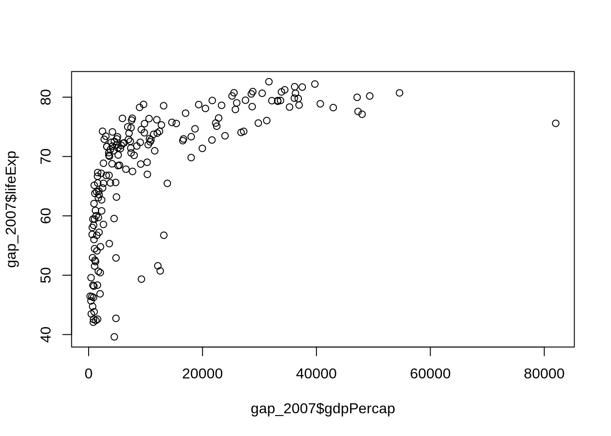
That produces a usable scatterplot, but the axes are not very readable, the labels are minimal, and the result does not provide much help for later refinement.
A histogram shows the same pattern:
hist(midwest_data$percollege, breaks = 10)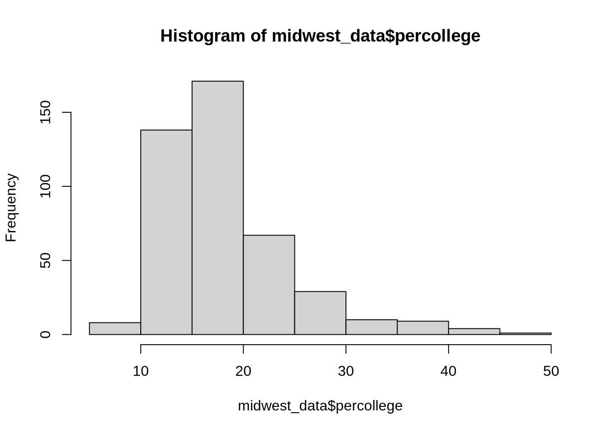
Again, it works. The issue is not that base R cannot make figures. It is that the workflow becomes awkward once more control is needed over labels, scales, themes, and grouped comparisons.
4.3.2 Switching To ggplot2
The same basic plots in ggplot2 are more structured from the start:
ggplot(gap_2007, aes(x = gdpPercap, y = lifeExp)) +
geom_point()
ggplot(midwest_data, aes(x = percollege)) +
geom_histogram(bins = 10)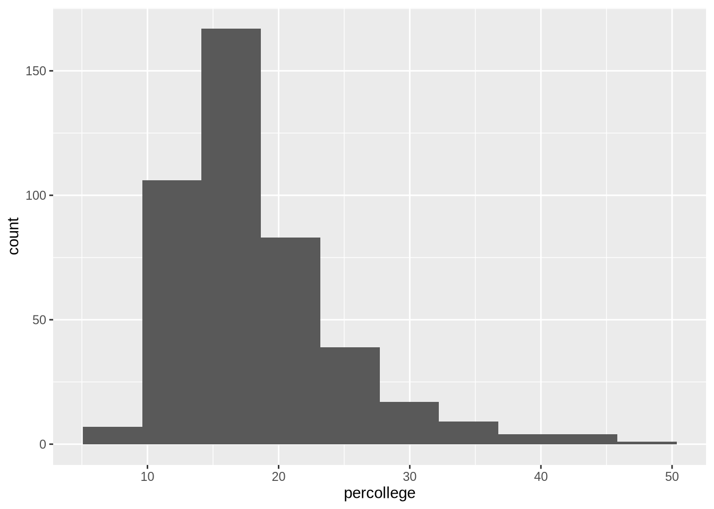
The important difference is not just appearance. ggplot2 makes it easier to build a plot in a more orderly way, and that becomes especially useful once labels, scales, themes, and grouped comparisons are added.
4.4 Why Is This Better?
With base R graphics, plotting often becomes a matter of packing more and more options into one command. ggplot2 is easier to revise because plots can be built step by step. That becomes especially helpful once labels, scales, colors, and grouped comparisons need to be added or changed.
4.5 Defaults
ggplot2 starts with defaults that are usually sensible and have good aesthetic “taste.” They are not always the final answer, but they provide a much better starting point than the default graphics. The usual workflow is therefore to begin with a simple plot and improve it incrementally.
4.6 The Grammar of Graphics
In ggplot2, plots are built layer by layer.
The minimum useful mental model is:
- a dataset
- a mapping from variables to visual features
- one or more geoms that are the plotted geometric forms
This separation matters because it keeps different design decisions from collapsing into one another. First decide what data belong in the figure. Then decide how variables should be encoded visually. Then decide which geometric form best supports the comparison of interest. That sequence makes plots easier both to build and to diagnose.
4.7 ggplot() And aes()
ggplot() starts the plot object. Usually it gets a dataset and a default mapping. The mapping lives inside aes(), short for aesthetics, and it tells ggplot2 which variables should control position, color, size, or some other visual property.
p_gap <- ggplot(
data = gap_2007,
mapping = aes(x = gdpPercap, y = lifeExp)
)Inside aes(), gdpPercap is mapped to the x-axis and lifeExp is mapped to the y-axis. They are variable names from the dataset.
That distinction matters because aes() is about data, not decoration. If color appears inside aes(), it carries information. If color appears outside aes(), it is simply a design choice.
Saving the plot object temporarily as p_gap is also a useful habit to notice. A ggplot object can be stored, then extended later with additional layers. That is what makes patterns such as p_gap + geom_point() possible.
4.8 Building A Visualization Pipeline
In ggplot2, a plot is built in pieces. A base plot object holds the data and the default mappings, and then the + operator keeps adding geoms, labels, scales, and themes.
The + operator can be read as “take this plot, then add this next component.” That is why ggplot2 code often reads like a visual pipeline: start with the data and mappings, then layer on the parts that make the figure complete.
4.8.1 Our First Geom: A Scatterplot
p_gap +
geom_point()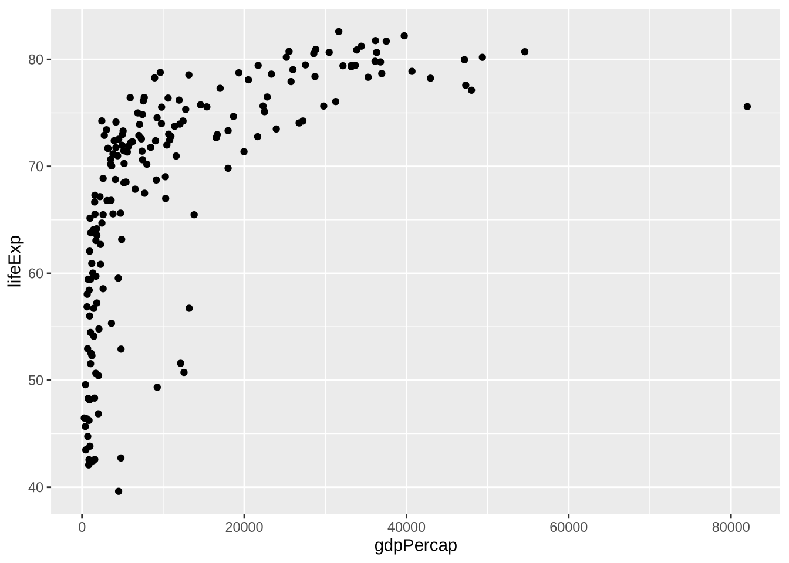
The geom_point() layer is what actually draws the marks. The plot object p_gap supplies the data and the default mappings; the geom decides how those mapped values appear on the page.
That already improves on many default base R graphics, but the x-axis is hard to read because GDP per capita is strongly skewed.1
4.9 Mapping Versus Setting
One of the most important ggplot2 distinctions is mapping an aesthetic versus setting it.
The alpha argument appears in the next few plots. alpha controls transparency: lower values make points lighter and more see-through, which is often useful when many points overlap.
When a variable is mapped, the visual feature changes with the data.
p_gap +
geom_point(aes(color = continent), alpha = 0.4) +
scale_x_log10(labels = scales::dollar) +
theme_minimal()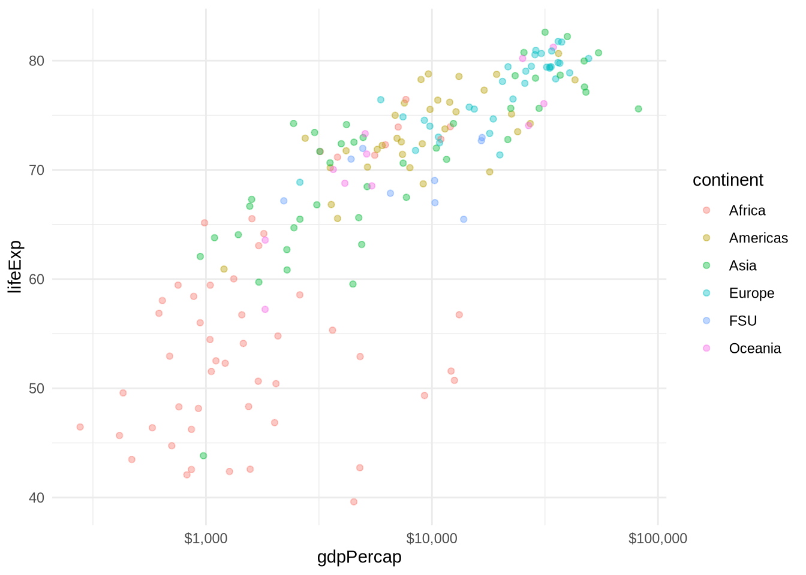
When a visual property is set, it stays fixed.
p_gap +
geom_point(color = "steelblue", alpha = 0.4) +
scale_x_log10(labels = scales::dollar) +
theme_minimal()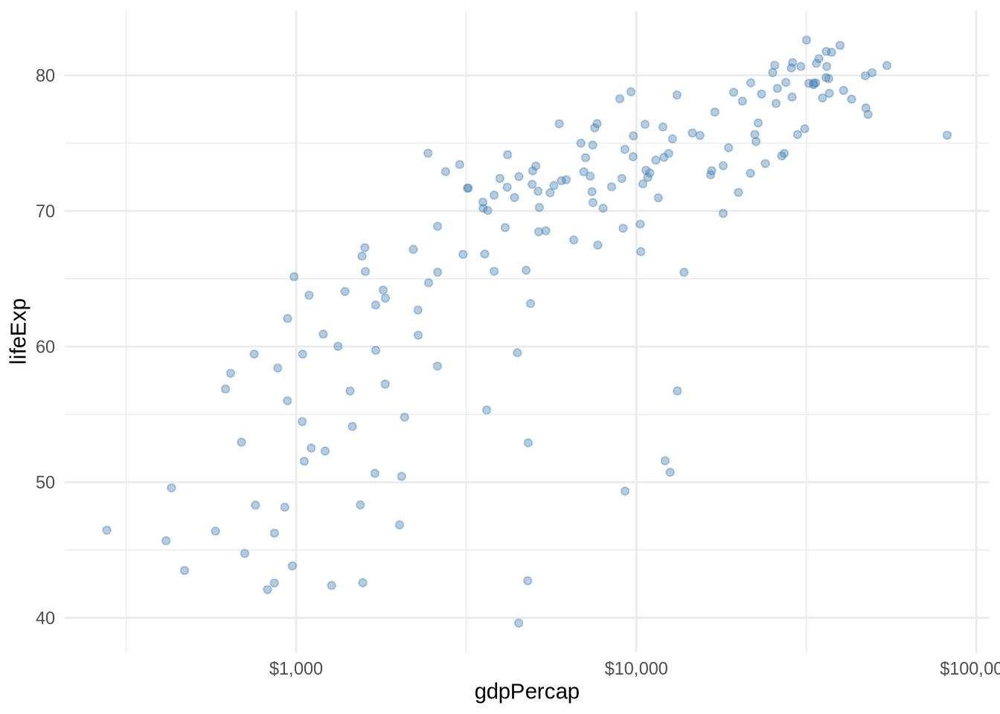
This distinction is foundational because it tells the viewer whether a visual difference should be interpreted as data or as styling. If color is mapped, different colors carry information. If color is set, the color is simply part of the design.
4.10 Choosing A Geom
The geom_*() part of the code is where you decide what kind of visual mark best matches the comparison you want the reader to make.
geom_point()works well when both x and y are continuous and each row should remain visible.geom_histogram()works when there is one continuous variable and the goal is to show its distribution.geom_line()usually works when the x variable is ordered, especially time.geom_col()works when the bar heights have already been summarized in the data.
For a fuller catalog of available geoms, scales, coordinate systems, and themes, the main ggplot2 reference index is useful: ggplot2 reference index.
ggplot(midwest_data, aes(x = percollege)) +
geom_histogram(bins = 10)
This is why ggplot2 is often easier to teach and revise than base graphics. The data, the mapping, and the geom are separate decisions, so it is easier to tell which part of the plot needs to change.
4.11 Smoothers
Smoothers are important because they help summarize the main relationship without hiding the underlying points. A scatterplot can show all the observations, but the overall direction of the relationship is sometimes easier to see once a fitted line or smooth curve is added.
4.11.1 Linear Smoother
p_gap +
geom_point(alpha = 0.25) +
geom_smooth(method = "lm", formula = y ~ x, linewidth = 1)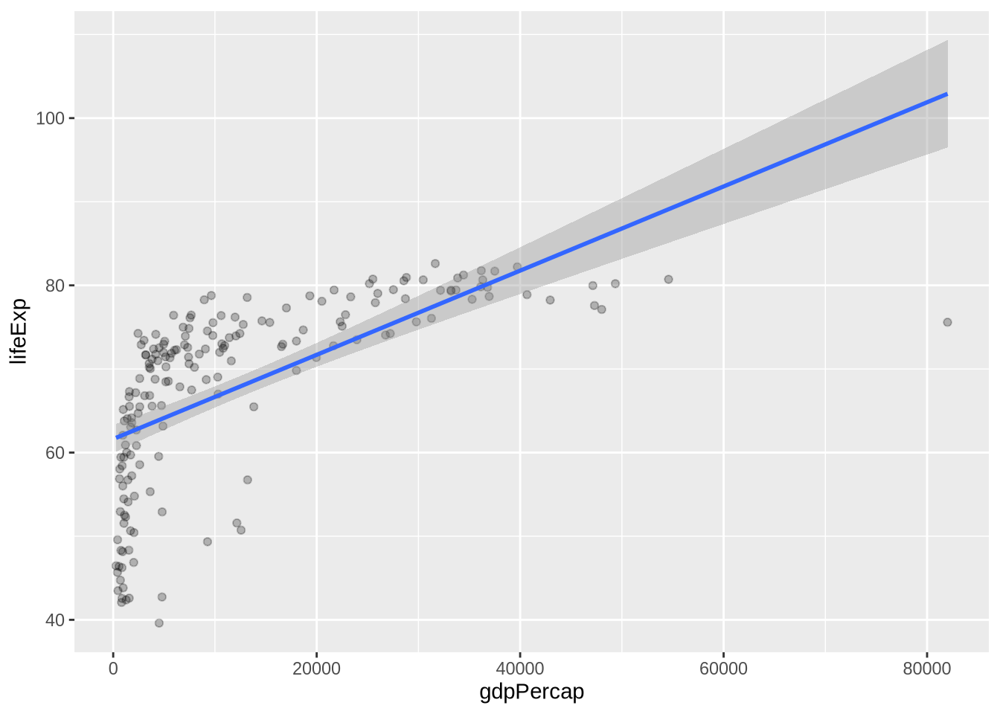
geom_smooth() adds that summary layer. With method = "lm", it fits a straight line. That can be useful when a roughly linear summary is enough, but it can also hide bends in the relationship.
4.11.2 Loess Smoother
p_gap +
geom_point(alpha = 0.25) +
geom_smooth(method = "loess", formula = y ~ x, linewidth = 1)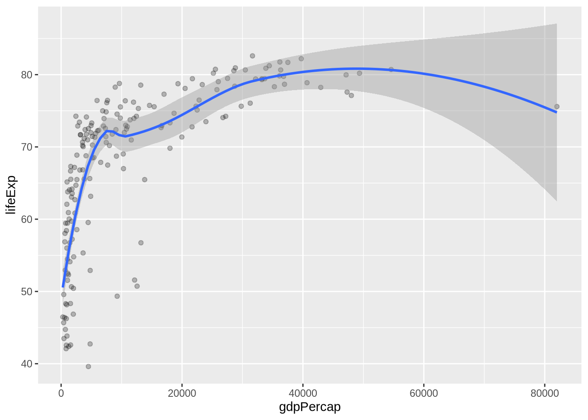
With method = "loess", the fitted line is allowed to bend. This is often useful during exploration because it can reveal curvature that a straight line would miss.
The difference between the two smoothers is easiest to see by comparing the previous two plots directly. A linear smoother gives one overall direction. A loess smoother follows the curve more closely. Neither is automatically correct. The right choice depends on whether the goal is a simple summary or a more flexible description of the pattern in the data.
4.12 Log Scales
Some variables are distributed so unevenly that a standard linear axis hides most of the interesting variation. GDP per capita is a good example: a few very high-income countries can stretch the axis so much that lower- and middle-income countries are compressed into one corner.
p_gap +
geom_point(alpha = 0.25) +
geom_smooth(method = "lm", formula = y ~ x, linewidth = 1) +
scale_x_log10(labels = scales::dollar)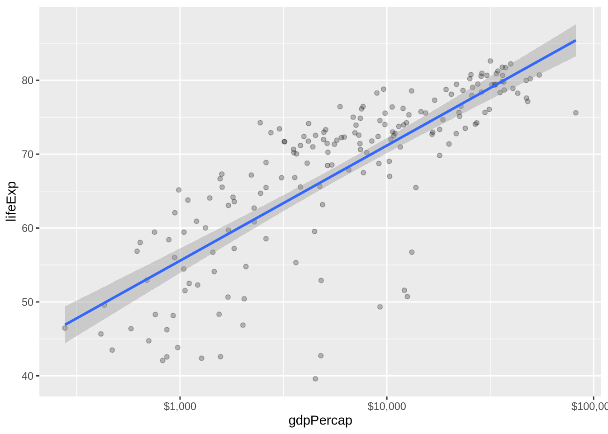
scale_x_log10() changes the x-axis to a logarithmic scale, which spreads the values more evenly and makes comparisons easier to read. The labels = scales::dollar part formats the axis as currency instead of leaving it in scientific notation.
Notice that the linear smoother also becomes more reasonable after the log transformation. This is a useful reminder that scale choices and model summaries are connected: sometimes the better fix is not a more elaborate smoother, but a better axis.
4.13 Labels With labs()
labs() is the main way to add descriptive text to a plot. It can supply a title, subtitle, axis labels, captions, and legend titles.
p_gap +
geom_point(alpha = 0.25) +
geom_smooth(method = "lm", formula = y ~ x, linewidth = 1) +
scale_x_log10(labels = scales::dollar) +
labs(
title = "Economic Growth and Life Expectancy",
subtitle = "Countries in 2007",
x = "GDP per capita",
y = "Life expectancy",
caption = "Source: Gapminder"
)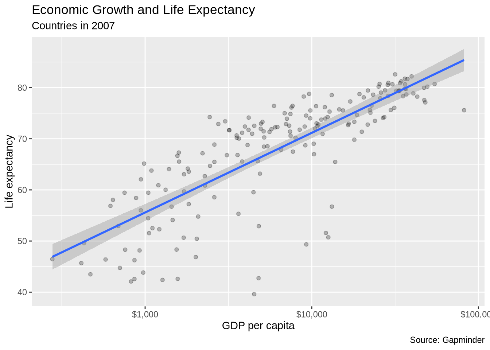
This matters because plots should be interpretable outside the code chunk itself. Good labels tell the reader what the plot is about, what the axes mean, and where the data came from.
subtitle and caption are therefore not separate systems. They are simply additional parts of labs(). A subtitle adds one more line of context beneath the title, and a caption is a natural place for a source note or a short methodological note.
4.14 A First Theme
Themes control the non-data parts of a plot: the background, grid lines, fonts, spacing, legend placement, and other visual defaults around the marks themselves. They do not change the underlying data or the geom. They change how the plot is presented.
theme_minimal() is a common first choice because it removes some of the heavier default background elements without changing the underlying data display.
p_gap +
geom_point(alpha = 0.25) +
theme_minimal()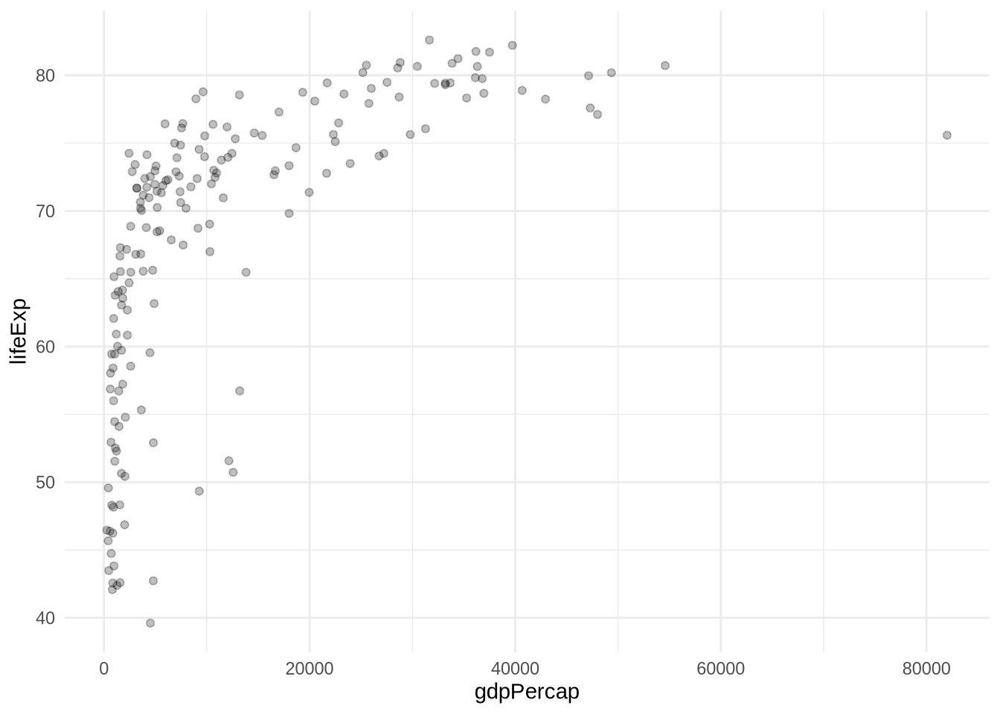
This is not the only useful theme, but it is a simple one to introduce early. A fuller comparison of built-in themes appears later in the chapter.
4.15 A Short Note On Color Schemes
Themes control the overall framing of the plot, but color scales control how mapped colors are chosen. Two especially common families are RColorBrewer palettes and viridis palettes.
RColorBrewer palettes offer many named qualitative, sequential, and diverging schemes. viridis palettes are popular because they stay readable across a wide range of values and usually remain more accessible for viewers with color-vision differences.
p_gap +
geom_point(aes(color = continent), alpha = 0.6) +
scale_color_brewer(palette = "Dark2")
p_gap +
geom_point(aes(color = continent), alpha = 0.6) +
scale_color_viridis_d()For categorical variables, functions ending in _d() are common. For continuous variables, the matching pattern is often _c(), as in scale_color_viridis_c().
4.16 The Improved Scatterplot
p_gap +
geom_point(alpha = 0.25) +
geom_smooth(method = "lm", formula = y ~ x, linewidth = 1) +
scale_x_log10(labels = scales::dollar) +
labs(
title = "Economic Growth and Life Expectancy",
subtitle = "Countries in 2007",
x = "GDP per capita",
y = "Life expectancy",
caption = "Source: Gapminder"
) +
theme_minimal()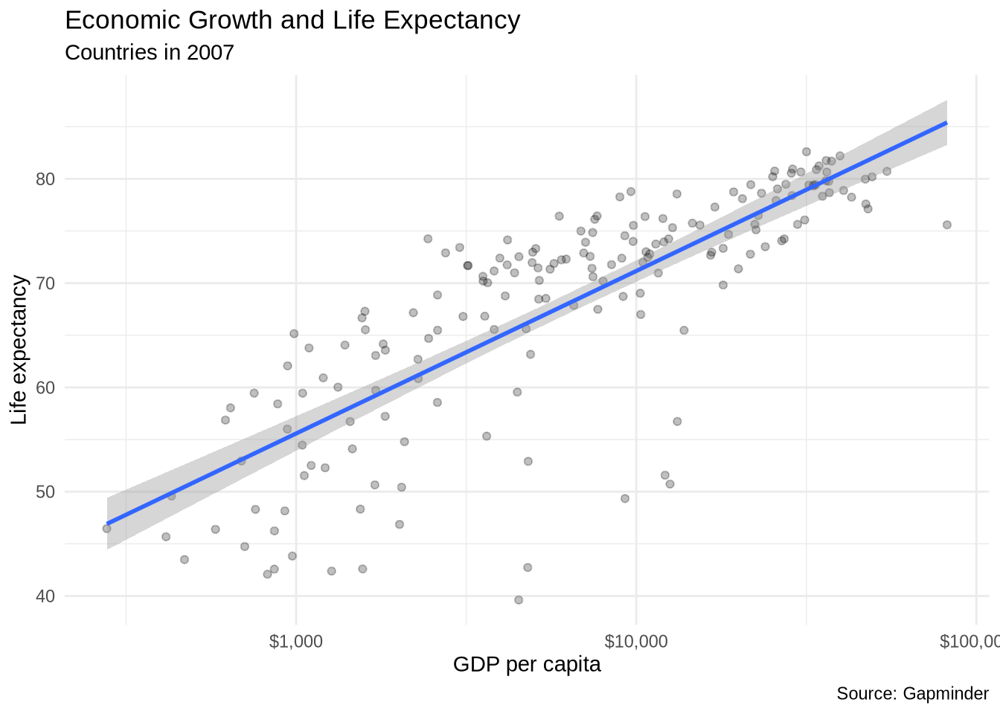
This version now combines the main pieces introduced so far. Transparency reduces overplotting. The smoother summarizes the broad relationship. The log-scaled x-axis makes the economic variation easier to inspect. labs() supplies the descriptive text. theme_minimal() removes some of the default visual clutter.
4.17 Continuous Aesthetics
Not every mapped aesthetic has to be categorical. Continuous variables can also be mapped to visual features like size or color.
ggplot(gap_2007, aes(x = gdpPercap, y = lifeExp)) +
geom_point(aes(size = pop), alpha = 0.4) +
scale_x_log10(labels = scales::dollar) +
scale_size_area(
max_size = 10,
labels = scales::label_number(scale = 1e-6, suffix = "M")
) +
labs(
title = "Population Mapped To Point Size",
x = "GDP per capita",
y = "Life expectancy",
size = "Population"
) +
theme_minimal()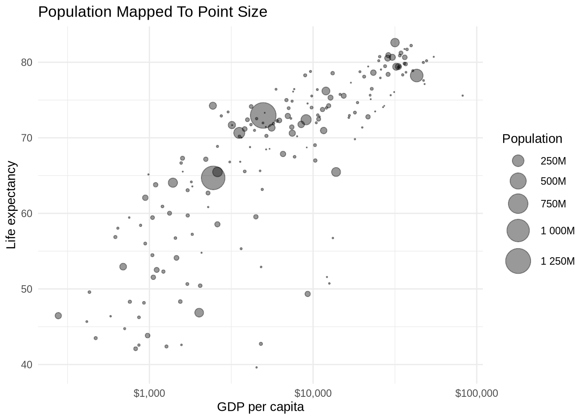
Mapping pop to size makes each point’s area scale with the country’s population, so the largest countries stand out without being assigned to a discrete group. scale_size_area() is used here rather than the default scale_size() because it keeps point area proportional to the value. This pattern is useful when the goal is to preserve a third numeric variable rather than split the data into discrete groups.
4.17.1 aes() Inside A Geom
The code above also introduces something new. Up to this point, every aes() call has been inside ggplot():
ggplot(data = gap_2007, mapping = aes(x = gdpPercap, y = lifeExp)) +
geom_point()
An aes() inside ggplot() sets the default mapping for the whole plot. Every layer added afterward inherits it unless told otherwise.
An aes() inside a specific geom, like geom_point(aes(size = pop)), applies only to that layer. In the population plot, x = gdpPercap and y = lifeExp are inherited from ggplot(), while size = pop is added just for the point layer.
That distinction matters whenever different layers should carry different mappings. A common case is a scatterplot with a smoother, where the points should be colored by group but the smoother should stay as a single overall line:
ggplot(gap_2007, aes(x = gdpPercap, y = lifeExp)) +
geom_point(aes(color = continent)) + # color applies only to the points
geom_smooth(method = "lm", se = FALSE) # one smoother overall, not one per continent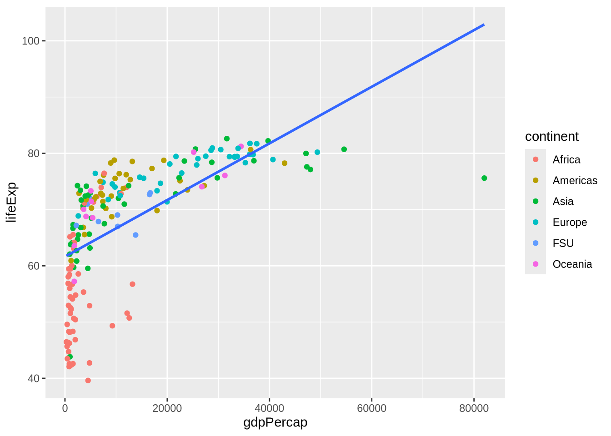
If color = continent were placed inside ggplot() instead, geom_smooth() would inherit it and draw five separate regression lines, one per continent. That is sometimes what you want and sometimes not — which is exactly why the choice of where to put aes() matters.
The rule is simple: put a mapping in ggplot() when every layer should share it, and put it inside a specific geom when only that layer should use it.
4.18 Low-hanging fruit
In a short course, these are the highest-value improvements:
- better titles and subtitles
- informative axis labels
- sensible ordering
- a simple clean theme
You do not need a long catalog of tricks to make a plot better. In practice, clarity usually improves more from better labels, ordering, and scale choices than from elaborate visual decoration. Themes do a lot of the work to make things more aesthetically appealing, but should be done after the basics.
4.19 Class Exercise: A Simple Scatterplot
Time: about five minutes.
Use the built-in mtcars dataset to make a quick scatterplot of car weight and miles per gallon.
Add:
geom_point()- a linear smoother with
geom_smooth(method = "lm", ...) - a title plus clearer axis labels with
labs() theme_minimal()
If time remains, replace the linear smoother with a loess smoother and compare the result.
Starter code:
ggplot(mtcars, aes(x = wt, y = mpg)) +
geom_point(...) +
geom_smooth(...) +
labs(...) +
theme_minimal()One solution is in Exercises/03-class-exercise-solution.R.
4.20 Direct Labels
Direct labels can sometimes replace a legend altogether.
label_data <- gap_2007 |>
filter(country %in% c("China", "India", "Japan"))
ggplot(gap_2007, aes(x = gdpPercap, y = lifeExp)) +
geom_point(alpha = 0.5, color = "gray75") +
geom_point(
data = label_data,
color = "firebrick",
size = 2.3
) +
geom_text(
data = label_data,
aes(label = country),
color = "firebrick",
nudge_y = 1.1
) +
scale_x_log10(labels = scales::dollar) +
labs(
title = "A Few Direct Labels",
x = "GDP per capita",
y = "Life expectancy"
) +
theme_minimal()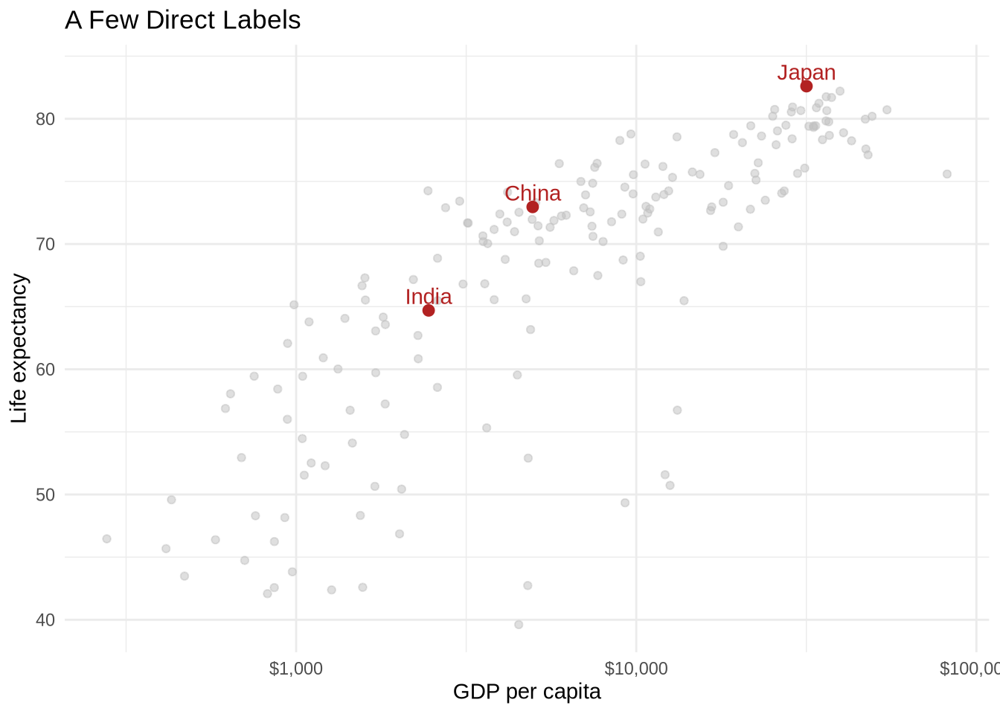
4.21 Exercises
- Recreate the life expectancy versus GDP plot with
continentmapped to color. - Make the same plot with a fixed point color instead.
- Rewrite the plot with a cleaner title, subtitle, and x-axis label.
These exercises reinforce the main logic of the chapter: build a simple plot, understand what each layer is doing, and improve clarity with the smallest useful changes.
4.22 Extra Material
4.22.1 Extra 1: Built-In Themes
Built-in themes are one of the quickest ways to change the overall look of a plot. theme_minimal() has already appeared once; this extra compares it with two other common built-in options.
theme_plot <- ggplot(gap_2007, aes(x = gdpPercap, y = lifeExp)) +
geom_point(alpha = 0.4) +
scale_x_log10(labels = scales::dollar) +
labs(
title = "Theme Comparison",
x = "GDP per capita",
y = "Life expectancy"
)
theme_plot + theme_grey()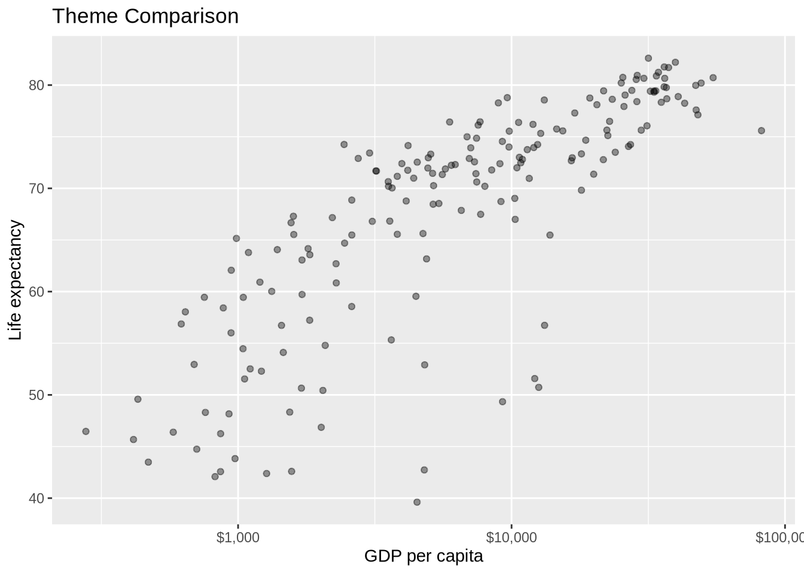
theme_plot + theme_bw()theme_plot + theme_minimal()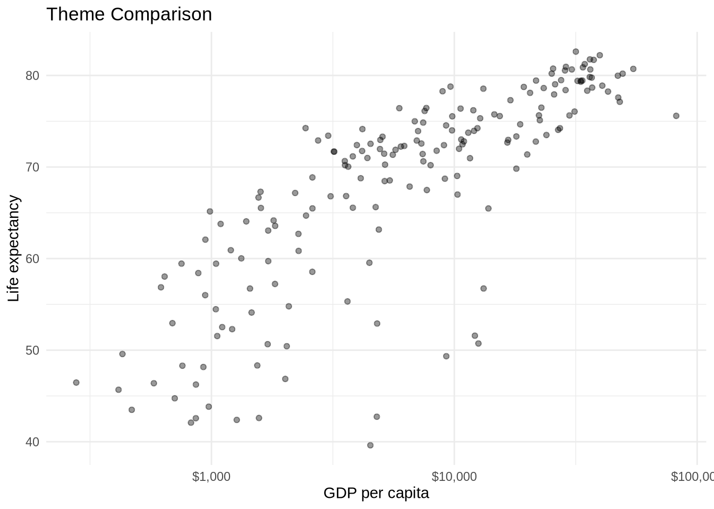
theme_grey() is the default, theme_bw() often works well for print, and theme_minimal() removes more background structure.
4.22.2 Extra 2: Discussion Prompt
- When is a direct label better than a legend?
- What does a log-scaled x-axis solve here?
- Which improvements changed interpretation rather than just appearance?
4.23 What Comes Next
The next chapter moves from one-panel plots to the broader problem of comparison.
That includes color, faceting, line charts, bar charts, distributions, and the question of how to separate data clearly without adding clutter.
That is not just a cosmetic issue. A strongly skewed variable can compress most observations into one corner of the plot and make important variation difficult to see. Scale transformations often improve interpretation more than elaborate theme adjustments.↩︎